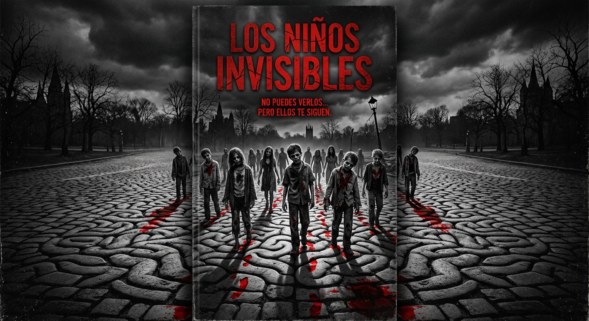

Los
fantasmas
del pasado
Cuando la paz parece conquistada,
la memoria aprende a tocar la puerta.
Hay pasados
que no aceptan
el silencio.
Jeison fue reclutado muy joven por la violencia cocalera al interior del país. Con poca formación académica y ética logró adaptarse rápidamente a un entorno violento y, bajo el mando de alias “Rectico”, presenció crueldad, injusticia y humillación hasta que su conciencia apagada lo llevó a cometer un acto infame y brutal contra sus antiguos vecinos, siguiendo la orden de su líder.
Un proceso de paz lo sacó de la selva al cemento. Pero cuando reiniciaba hacia una nueva vida, su conciencia aparentemente ausente se manifestó repentinamente con todo su peso, rompiendo progresivamente su sueño y su cordura.
¿O eran realmente sus vecinos?
Ven a conocer
la historia
antes que nadie.

La historia
te espera
en las librerías.
Después de su presentación, podrás encontrar Los fantasmas del pasado en las librerías aliadas y solicitar tu ejemplar para comenzar a descubrir qué regresó con Jeison.